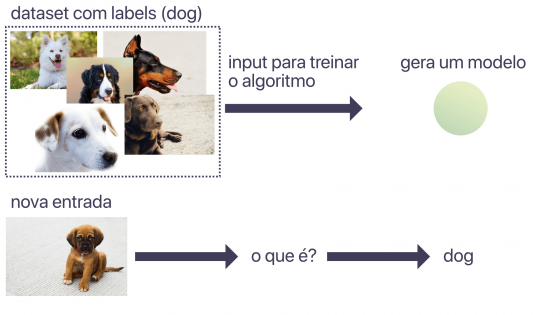

{kind=link}
Aprendizagem Supervisionada

Aprendizagem Supervisionada
Imagine um programa que usa Machine Learning para identificar fotos de cachorros. Vou usar dois dados de entrada para treiná-lo:{kind=link}
Aprendizagem Supervisionada
- Imagem: fotos variadas, algumas de cachorros, e outras não.
- Boolean: um boolean que indica se a foto é ou não de um cachorro.
Esta é a aprendizagem supervisionada: dizemos ao computador o que é cada entrada (qual o label) e ele aprende quais características daquelas entradas fazem elas serem o que são.
De acordo com o tipo de resultado do algoritmo, podemos classificá-lo entre algoritmo de classificação ou algoritmo de regressão.
O exemplo anterior é um exemplo de classificação. Estamos classificando uma entrada entre dois tipos possíveis: cachorro ou não-cachorro.
Já a regressão ocorre quando o resultado é numérico. Por exemplo, um programa que calcula o valor que uma casa deveria ter com base em características como número de quartos, localização e ano de construção. Com base em exemplos de casas similares, o computador aprende a precificar novas casas.
Aprendizagem Não Supervisionada
Nos três tipos de aprendizagem existe a semelhança do computador aprender a inferir algo com base em suas experiências passadas. A diferença da aprendizagem não supervisionada para a supervisionada é que aqui a aprendizagem ocorre com dados não rotulados, ou seja, não dizemos ao computador o que é aquela entrada.{kind=link}
Por exemplo, vamos imaginar uma distribuidora que quer classificar seus clientes em categorias. Ela cria um programa que usa aprendizagem não supervisionada para fazer isto. Ou seja, ela ensina a separar os dados em grupos semelhantes, sem dizer o que são estes grupos. Um possível resultado é um grupo de clientes que compram produtos frescos, e outro com clientes que compram produtos industrializados, por exemplo.
Da mesma forma com a classificação de imagens. Temos um modelo que aprendeu a classificar imagens entre dois grupos distintos. Ao receber uma nova imagem, com base em seus atributos, ele identifica a qual grupo ela pertence. Sem necessariamente saber o que é aquele grupo.
Aprendizagem Por Reforço
A terceira classificação é a aprendizagem por reforço. Imagine criar um programa responsável por dirigir um veículo autônomo. Ele deve aprender a dirigir pelas ruas e transportar seus passageiros. Existem diversas formas de otimizar esta tarefa. Por exemplo, chegar ao destino no menor tempo possível e não causar nenhum acidente. Queremos que ele saiba o que fazer conforme o que ocorre à sua volta, e preferimos que ele demore um pouco mais do que causar um acidente, por exemplo. A aprendizagem por reforço é uma forma de ensinar ao computador qual ação priorizar dada uma determinada situação.{kind=link}
É possível vincular recompensas e punições aos possíveis resultados e, ponderando-as da forma certa, ensinar o nível de prioridade de cada meta. Neste exemplo, posso atribuir uma punição muito maior em caso de um acidente em comparação a se atrasar poucos minutos. Desta forma se ensina quais ações o computador deve priorizar.
Existem muitos detalhes que não foram cobertos por este artigo, porque a ideia foi iniciar o assunto para que possamos entender um pouco do que é Machine Learning e como é implementar programas que utilizam este recurso.
Além de conhecer as técnicas para criar programas que usam Machine Learning, é preciso também prestar atenção aos dados que serão utilizados para treinar estes programas. Grande parte do sucesso de um modelo vem da qualidade desses dados. É possível tratá-los utilizando técnicas de Analytics.
Leia também:
Fonte:
22/Mai/2018 20:46:28